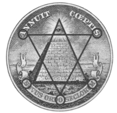

75. BÖLÜM
Dalgın gözlerle boşluğa bakan Robert Langdon, ağırdan alan taksi şoförüne hızlanmasını söyleyemeyecek kadar kendini yorgun hissediyordu. Piramidi neyin bu kadar özel kıldığını anlayamadıkları için hayal kırıklığı yaşayan Katherine de yanında sessizliğe gömülmüştü. Piramit ve kapak taşıyla ilgili bildikleri her şeyi denemişler ama hâlâ bu piramidin nasıl bir harita olabileceğini çözememişlerdi.
Jeova Sanctus Unus? Sır Düzen’in içinde gizli?
Telefondaki gizemli kişi, verdiği özel adrese gidebilirlerse onlara cevapları sunmaya söz vermişti. Roma’da, Tiber’in kuzeyinde bir sığınak. Langdon, kurucu ataların “Yeni Roma”ya sonradan Washington ismini verdiklerini biliyordu ama ilk kurdukları hayalin belirtileri hâlâ devam ediyordu. Tiber’in suları hâlâ Potomac’a akıyordu; senatörler hâlâ St. Peter’s kubbesinin bir benzerinin altında toplanıyorlardı; Volcanus ve Minerva, Rotunda’nın uzun zaman önce yok olan ateşinin üstünden hâlâ onları koruyordu.
Langdon ile Katherine’in aradığı cevaplar birkaç kilometre uzakta bekliyordu. Massachusetts Bulvarı’nın kuzeybatısında. Gittikleri yer gerçekten de Washington’ın Tiber Nehri’nin kuzeyinde bir sığınaktı. Langdon şoförün daha hızlı gitmesini istiyordu.
Katherine aniden bir şeyin farkına varmış gibi koltuğunda doğruldu. “Aman Tanrım! Robert!” Bembeyaz bir yüzle ona döndü. Önce tereddüt ettiyse de sonra üzerine basa basa konuştu. “Yanlış yöne gidiyoruz!”
Langdon, “Hayır, burası doğru!” diye karşı çıktı. “Massachusetts Bulvarı’nın...”
“Hayır! Yanlış yere gidiyoruz demek istiyorum!”
Langdon’ın kafası bulanmıştı. Arayan gizemli kişinin tarif ettiği yeri nasıl anladığını Katherine’e zaten anlatmıştı. Sina Dağı’ndan on taş, gökyüzünden bir taş, Luka’nın karanlık babasının suretinden bir taş. Dünyada bu iddialara karşılık veren yalnızca bir bina vardı. Ve taksi tam olarak oraya gidiyordu.
“Katherine, yerin doğru olduğuna eminim.”
“Hayır!” diye bağırdı. “Artık oraya gitmemize gerek yok. Ben piramitle kapak taşını anladım! Artık tüm bunların neyle ilgisi olduğunu biliyorum!”
Langdon şaşırmıştı. “Anladın mı?”
“Evet! Freedom Plaza’ya60 gitmemiz gerek!”
Langdon artık hiçbir şey anlamıyordu. Yakın olsa da Freedom Plaza’nın konuyla hiç ilgisi yoktu.
Katherine, “Jeova Sanctus Unus!” dedi. “İbranilerin tek Tanrısı. İbranilerin kutsal sembolü Yahudi yıldızıdır -Süleyman’ın Mührü- ve bu masonlar için de önemli bir semboldür.” Cebinden bir dolar çıkardı. “Bana kalemini ver.”
Langdon sersemlemiş bir halde ceketinden kalemini çıkardı.
“Bak.” Bir doları bacağının üstüne yaydı ve kalemi alıp, banknotun arka tarafındaki Devlet Mührü’nü gösterdi. “Süleyman’ın Mührü’nü, Birleşik Devletler’in Devlet Mührü üzerine yerleştirirsen...” Piramidin tam üstünden bir Yahudi yıldızı sembolü çizdi. “Bak ne elde ediyorsun!”
Langdon banknota göz attıktan sonra, Katherine’e sanki deliymiş gibi baktı.
“Robert, daha yakından bak! Neyi işaret ettiğimi görmüyor musun?”
Langdon yeniden çizime baktı.

Nereye varmaya çalışıyor böyle? Langdon bu resmi daha önce de görmüştü. Komplo teorisyenlerinin hayli tuttuğu bu “kanıt”, Amerika’nın kurulurken masonların gizli etkisi altında olduğunu gösteriyordu. Altı köşeli yıldız, Birleşik Devletler Mührü’nün üstüne kusursuz biçimde yerleştirildiğinde, yıldızın tepe noktası, masonik her şeyi gören gözün üstüne oturuyordu... ve biraz ürkütücü olsa da yıldızın diğer köşeleri açık biçimde M-A-S-O-N harşerine denk düşüyordu.
“Katherine, bu sadece bir tesadüf. Freedom Meydanı’yla ne ilgisi olduğunu hâlâ anlamıyorum.”
Bu kez sesi öfkeli çıkan Katherine, “Bir daha bak!” dedi. “İşaret ettiğim yere bakmıyorsun! Tam şurası. Görmüyor musun?”
Langdon o anda gördü.
CIA operasyon lideri Turner Simkins, Adams Binası’nın dışında durup, taksinin arka koltuğunda geçen konuşmayı duymaya çalışırken cep telefonunu kulağına iyice dayadı. Bir şey oldu. Ekibi, değiştirilmiş Sikorsky UH-60 helikopterine binip kuzeybatıya yönelmek ve yollarını kesmek üzereydi ama şimdi durum değişmiş gibi görünüyordu.
Katherine Solomon saniyeler önce yanlış yere gittiklerini iddia etmeye başlamıştı. Açıklaması -bir dolarlık banknot ve Yahudi yıldızı- takım lideri kadar, anlaşıldığı kadarıyla Robert Langdon’a da bir şey ifade etmemişti. En azından ilk başta. Ama şimdi Langdon onun ne dediğini anlamış gibiydi.
Langdon, “Tanrım, haklısın!” diye bağırdı. “Daha önce görmemiştim!”
Simkins birinin araçtaki bölmeye vurduğunu ve aradaki paravanın açıldığını duydu. Katherine şoföre, “Planda değişiklik yaptık,” dedi. “Bizi Freedom Plaza’ya götür!”
Taksi şoförü huzursuz bir sesle, “Freedom Plaza mı?” dedi. “Massachusetts’ten kuzeybatıya gitmiyor muyuz?”
Katherine, “Unut onu!” diye bağırdı. “Freedom Plaza! Buradan sola dön! Buradan! BURADAN!”
Ajan Simkins taksinin, lastiklerini öttürerek köşeyi döndüğünü duydu. Katherine, Devlet Mührü’nün meydana gömülü bronz kalıbı hakkında Langdon’a heyecanla bir şeyler anlatıyordu.
Taksi şoförü gergin bir sesle araya girdi. “Hanımefendi, teyit etmek için soruyorum. Freedom Plaza’ya gidiyoruz, Pennsylvania Bulvarı ile On Üçüncü Sokak’ın köşesi, değil mi?”
Katherine, “Evet!” dedi. “Acele et!”
“Çok yakın. İki dakika.”
Simkins gülümsedi. Aferin Ömer. Hazırda bekleyen helikoptere doğru koşarken, ekibine seslendi. “Onları yakaladık! Freedom Plaza! Kımıldayın!”
60 Özgürlük Meydanı